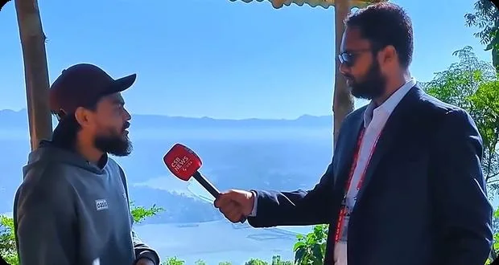
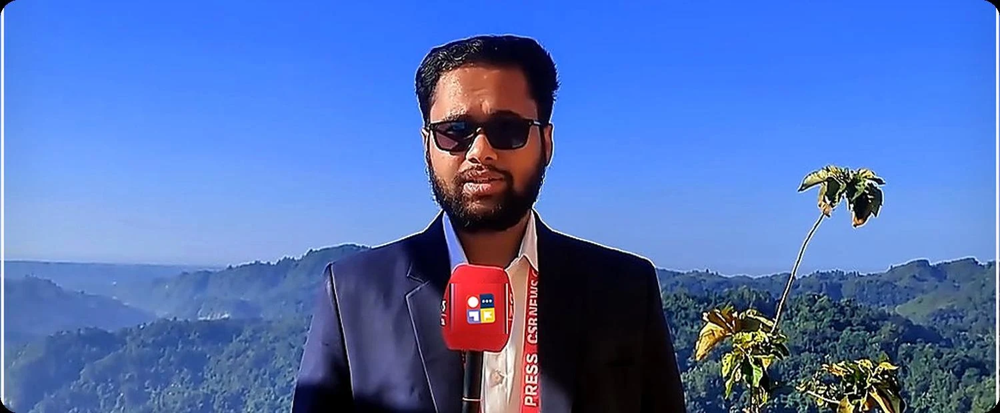
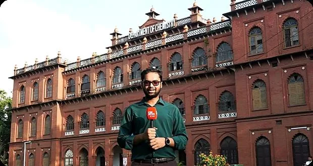
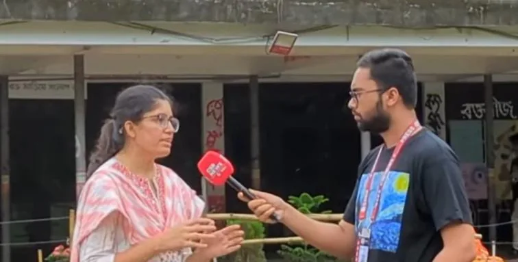
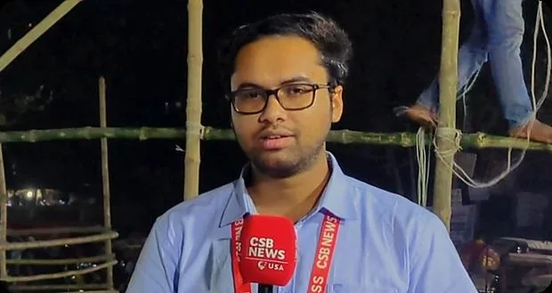
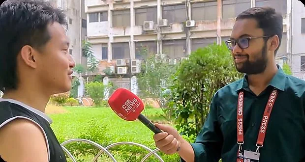
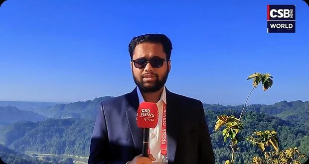
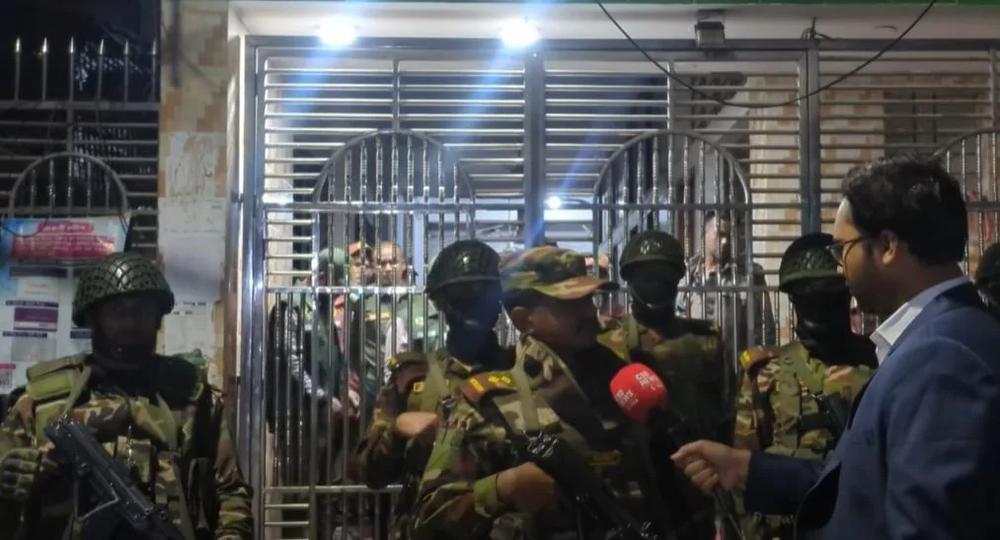

▶The Chittagong Hill Tracts
An investigative visual feature exploring indigenous culture, biodiversity, displacement, resistance and regional socio-political realities.
Watch story ↗Special Correspondent · Multimedia Journalist
Documentary Producer · Education Specialist
I work across on-ground reporting, investigative storytelling, live broadcast coverage, documentaries, interviews, bilingual narration and visual journalism — with a research-driven approach shaped by my background in education.

Research first. Report from the ground. Tell the story with clarity.
Selected Work
A curated selection of documentary journalism, election coverage, public-interest reporting and visual field work.

▶An investigative visual feature exploring indigenous culture, biodiversity, displacement, resistance and regional socio-political realities.
Watch story ↗
▶An in-depth documentary on student politics, youth democratic aspirations and the historic DUCSU election.
Watch story ↗
▶A grassroots political documentary examining voter aspirations, democratic reform demands and public sentiment.
Watch story ↗
▶A broadcast analysis connecting political party manifestos with socio-economic priorities and electoral ground reality.
Watch story ↗
On-ground interviews and public perspectives, built around direct voices from communities and civic spaces.
View field archive ↓
Landscape, communities and on-ground coverage from the hill districts, combining stand-ups with human stories.
View field archive ↓Student life, culture, education, public affairs and university-centered reporting from the University of Dhaka.
View field archive ↓
High-access field coverage focused on context, verification, interviews and visual reporting under deadline pressure.
View field archive ↓About Me
I am a Special Correspondent, Multimedia Journalist, Documentary Producer and Education Specialist with experience in on-ground reporting, investigative storytelling, live broadcast coverage, documentary production, interviews, bilingual narration, video editing and multimedia journalism.
I currently work with CSB News USA LLC and FROS News World, covering public affairs, politics, education, communities, social issues and stories from the field for national and international audiences. My work brings together research, field investigation, interviewing, visual storytelling, broadcast journalism and post-production.
Alongside journalism, I hold a Bachelor of Education (B.Ed. Hons.) and am continuing my Master of Education (M.Ed.) in Pre-Primary and Primary Education at the Institute of Education and Research, University of Dhaka. My background in curriculum, pedagogy and research adds context and analytical depth to the way I approach reporting.
Experience
Selected roles across international reporting, multimedia production, campus journalism and education.
Current role
Investigative broadcast reports, international field reporting, live on-camera coverage, documentary production, bilingual narration and cross-platform multimedia delivery.
CSB News USA LLC
Nationwide field reporting on governance, civic voices and socio-political dynamics, including interviews, breaking news, live field updates and rapid digital video editing.
University Laboratory School & College, Dhaka
English-version teaching, lesson planning, academic documentation, assessment and multimedia-supported classroom learning.
Capabilities
Special correspondent reporting, live TV broadcast, bilingual voiceover, news narration, investigative documentary production, scriptwriting and field moderation.
DaVinci Resolve, CapCut, Canva, Adobe Photoshop, Lightroom, broadcast color grading, graphic design and media branding.
Research workflows, Microsoft Office, basic SPSS analytics, AI prompt engineering and generative photo/video production.
Pre-primary and primary education, curriculum analysis, pedagogy, English-version elementary education and education-focused research.
Education
My academic training in education helps me approach people, institutions and policy with stronger context — especially when a story touches classrooms, young people, learning systems or public policy.
Institute of Education and Research (IER), University of Dhaka
Institute of Education and Research (IER), University of Dhaka
Field Archive
Reporting stand-ups, interviews and field assignments selected from my visual media archive.
Questions from the ground during an active field assignment.
A stand-up framed by the landscape of the hill region.
A direct conversation with a student during a reporting assignment.
Reporting on camera after dark.
An on-camera report from the University of Dhaka.
A cross-cultural interview in the field.
An on-location update from the hill districts.
Firsthand perspectives through a field interview.
Speaking with a resident while reporting from the hills.
Contact
For media inquiries, reporting collaborations, documentary projects, interviews, professional opportunities and education-related communication.